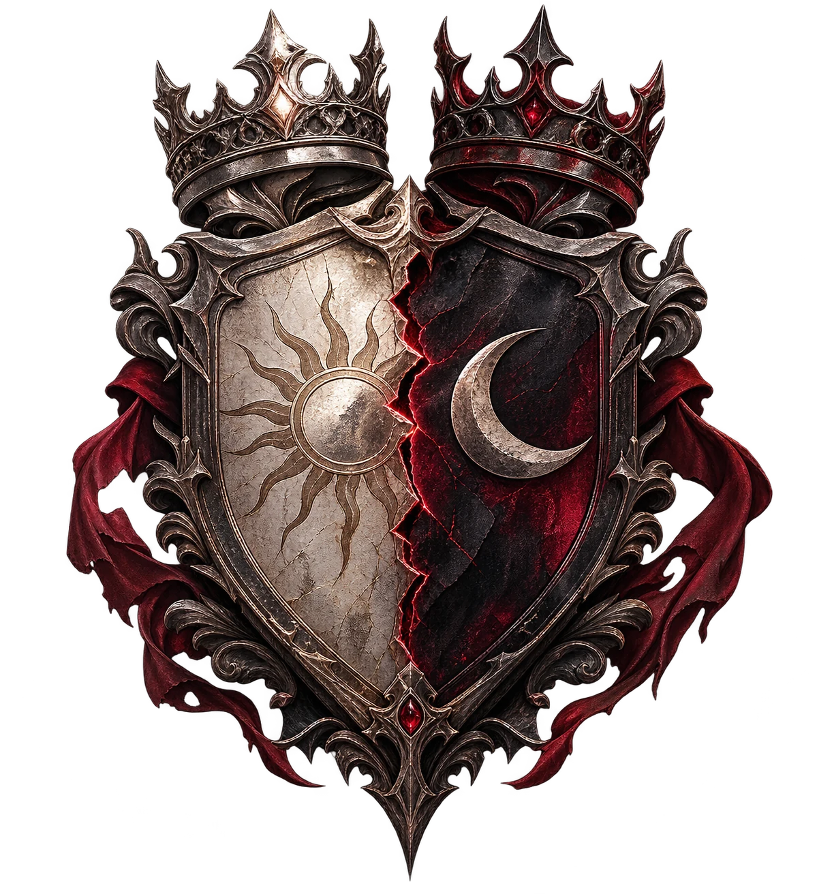

Классы и специализации
Шесть классов и восемнадцать специализаций. У каждого направления собственная система талантов и боевой стиль.
RaskolClassesИзучить классы ↗

РАСКОЛДВЕ КОРОНЫРАСКОЛ развивается как единый игровой мир, в котором бой, развитие персонажа, экономика, пространство и повседневная жизнь должны работать вместе.
Основа ролевого пути — класс, специализация и развитие персонажа.
Шесть классов и восемнадцать специализаций. У каждого направления собственная система талантов и боевой стиль.
Система пространственных правил, границ и взаимодействия с игровыми территориями.
Экономические и производственные направления формируют занятия за пределами боя.
Экономическая инфраструктура, работа с валютами и финансовыми операциями игрового мира.
Профессиональные направления, сбор ресурсов, фермерство, горное дело и лесозаготовка.
Жилое пространство и персональные места в игровом мире.
Отдельное направление, связанное с перемещением и взаимодействием между местами мира.
Игровой мир дополняется системами NPC и взаимодействиями с окружением.
Персонажи мира и точки взаимодействия с игровыми системами.
Общие серверные механизмы, связность и согласованная работа компонентов экосистемы.